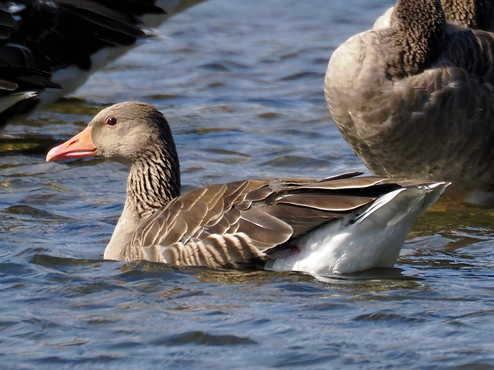
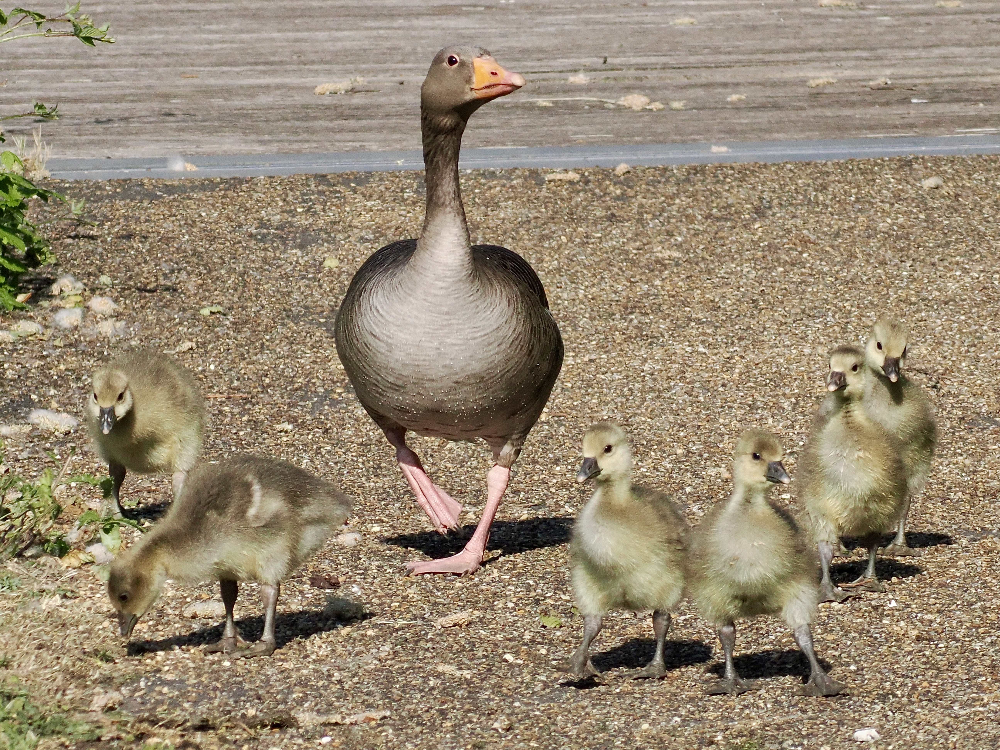

Greylag Goose
Anser anser
Order: Anseriformes
Family: Anatidae

The default grey goose with an orange bill and pink feet.

Goslings are yellow with spiky feathers.
Order: Anseriformes
Family: Anatidae

The default grey goose with an orange bill and pink feet.

Goslings are yellow with spiky feathers.